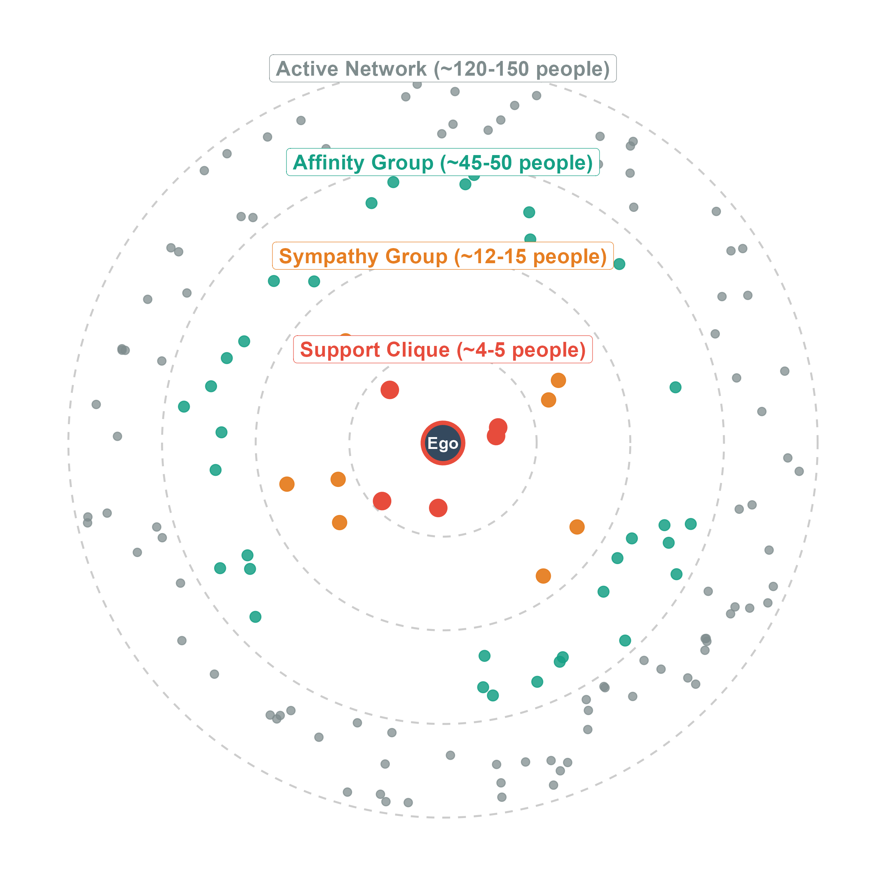

Dunbar’s Theory of Social Circles
Dunbar’s Theory of Circles or The Social Brain Hypothesis, proposes that the size and structure of your social network is constrained by cognitive limits, specifically the size of the human neocortex. This theory suggests that your ego-network is organized into distinct layers or circles of intimacy, with each layer representing a different level of social closeness and demanding varying amounts of cognitive and emotional investment, as well as time and energy.
Core tenets of Dunbar’s Theory
Layered Structure of Ego Networks (Dunbar Circles)
Ego networks (see ?@sec-egonets), which are centered around you (the ego) and your contacts (alters), are organized into concentric layers based on intimacy and closeness (see ?@sec-tiestrength). Closer layers are smaller and more intimate, while farther layers are larger and less intimate (as shown in Figure 2). These different relationships incur varying “maintenance costs” in terms of cognitive, emotional, time, and energy investment. These costs help determine the number of persons in each of your layers.

The specific layers and their approximate sizes are:
- Support Clique (~4-5 people): This is the innermost and most intimate layer, consisting of your most intimate kin and best friends. These are the people you can rely on in times of crisis and emergencies. For instance, if you are in a car accident, you would likely call someone from this layer for help. This layer requires the highest level of emotional and cognitive investment.
- Sympathy Group (~12-15 people): This layer includes kin and good friends with whom you interact often and who can provide some services. This layer is less intimate than the support clique but still involves frequent interaction. For instance, if you are moving to a new house, you might ask someone from this layer for help with packing or moving.
- Affinity Group (~45-50 people): This group consists of more casual but still close friends and extended family. People in this layer are less likely to provide support in emergencies but are still part of your social circle. For instance, if you are hosting a party, you might invite people from this layer.
- Active Network (~120-150 people): This outermost layer includes the total number of people you recognize by face/name (without help from computers and social media websites) and interact with at least once a year. This is the largest circle of the Dunbar Circles, representing people you consider when making decisions, but do not engage with as frequently. For instance, if you are looking for a new job, you might consider people from this layer as potential contacts for job opportunities (see ?@sec-swt).
Tie Strength and Network Layers
Tie strength (see ?@sec-tiestrength) is a crucial element that correlates with these layers. Your strong ties are typically found in the inner, more intimate circles (e.g., support clique and sympathy group), while weak ties are characteristic of the outer layers (e.g., active network). The theory of g-transitivity we covered in ?@sec-swt (Granovetter’s transitivity rule) is more likely to apply to strong ties in your support clique and sympathy group.
This means that if you have a strong tie with someone in the inner Dunbar layers, you are more likely to have a strong tie with their friends as well, leading to a higher likelihood of forming triads and cohesive subgroups within these inner layers. In contrast, weak ties in the outer layers are less likely to form such triads, resulting in a more fragmented network structure but also greater access to diverse information and resources.
Implications of Dunbar’s Theory
Dunbar’s Theory has several implications for understanding social behavior and network dynamics:
- Cognitive and Emotional Investment: The theory emphasizes that maintaining social relationships requires investing cognitive and emotional resources in each tie. As a result, individuals must prioritize their relationships, leading to a natural limit on the number of close relationships they can maintain.
- Social Support and Well-being: The innermost layers of the Dunbar Circles are crucial for providing social support, which is essential for mental and emotional well-being. The quality of these relationships can significantly impact an individual’s health and happiness.
- Network Dynamics: The structure of ego networks can influence how information and resources flow through a social network. Strong ties in the inner layers can facilitate trust and cooperation, while weak ties in the outer layers can provide access to new information and opportunities.
- Social Media and Technology: The rise of social media and digital communication has challenged some aspects of Dunbar’s Theory, as it allows individuals to maintain a larger number of weak ties. However, the theory still holds that there are cognitive limits to the number of meaningful relationships one can maintain, even with technological mediation.
In summary, Dunbar’s Theory of Social Circles provides a framework for understanding the organization and limitations of human social networks, emphasizing the role of cognitive constraints in shaping our social relationships and interactions.
Social Brain Hypothesis
The fundamental premise is that the relatively large size of the human brain, particularly the neocortex, evolved to manage complex social relationships. The size of the neocortex correlates with average group size across primates, with humans having the largest neocortex relative to body size, suggesting a cognitive limit to the number of stable relationships you can maintain. The main conclusion is that the brain is essentially for keeping track of other people, among other things. This is called the social brain hypothesis (as shown in Figure 1).